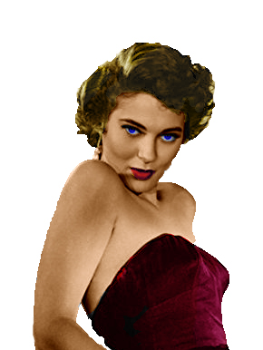
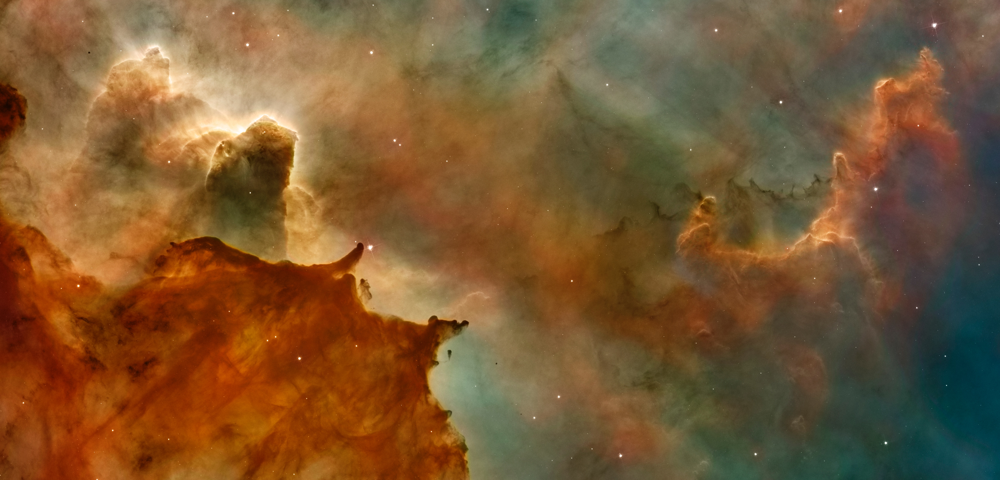

Alien Eye
Image Before
Image After
What I did:
- Cropped Image-CH 3, 15
- Erased Parts of image-CH 10,15
- Made image 50% opacity on main poster-CH 3, 5, 6
- Added lightening filter to the red eye-CH 9
Transport Ship
Image Before
Image After
What I did:
- Erased background of image to get ship-CH 10,15
- Copied image to place on final poster-CH 4
Women with Gun Part One (T'Shondra)
Image Before
Image After
What I did:
- Pasted in body armor from movie Aliens-CH 4
- Pasted in new finger nails to cover up red nails-CH 4
- Used color balance and hue/saturation to make skin color darker-CH 5
- Erased hair in the image-CH 10,15
- Deleted unwanted portions of image-CH 4
- Used spot healing tool to fix blemishes-CH 4, 7, 15
- Clone stamped area around microphone below nose-CH 15, 10
- adjusted microphone slightly below nose and placed more on mouth-CH 4
- Pasted into aliens photo
Women with Gun Part Two (T'Shondra)

Image Before
Image After
What I did:
- Pasted in body armor from movie Aliens-CH 4
- Used bounding box to adjust and rotate body armor size-CH 12, 13
- Adjusted brightness and hue/saturation of armor slightly-CH 5
Oculus Rift
Image Before
Image After
What I did:
- Deleted unwanted parts of image-CH 4, 15
- Changed size of the image-CH 13
- Pasted into final poster-CH 4
- Added a lightening filter to image CH 9
Mark Walhberg Image
Image Before
Image After
What I did:
- Erased background with easer and background eraser-CH 10
- Modified color in some areas using brush tool-CH 11
- Transformed size of the image-CH 13
- Defringed Image-CH 3
- Flipped image horizontaly-CH 8, 13
Sandra Bullock Image
Image Before
Image After
What I did:
- Erased background with eraser and background eraser-CH 10
- Changed brightness of image-made her lighter-CH 5
- Changed size of image using transform-CH 8, 13
- Defringed image-CH 3
Denzel Washington Image
Image Before
Image After
What I did:
- Erased background with eraser and background eraser
- Used clone stamp tool to get rid of Lt. Colonel rank on hat and collar
- Used clone stamp tool to get rid of patch on right shoulder
- Added in colonel rank
- Used hue/saturation and brightness/contrast tools to make skin tones darker
- Defringed image
- Flipped image horizontally
Marta Toren
Image Before

Image After
What I did:
- Cropped Image
- Changed Image Size
- Cut away background
- Defringed Image
- Used Color Balance and many layers to colorize
- Used Hue Saturation and many layers to colorize
Nebula Image

Image Before
Image After
What I did:
- Used Smudge tool to change colors slightly
- Copied and pasted numerous aspects of nubula together
- Liquified parts of the gas to change its appearance
- Changed transparency in parts of the image
Purple Planet
Image Before
Image After
What I did:
- Erased background of image
- Changed size of image
- Rotated image
Blue Planet
Image Before

Image After
What I did:
- Erased background
- Changed size of the image
- Build more land mass to the image using clippings masks
- Rotated image
Jupiter / Saturn Image Part 1
Image Before

Image After
What I did:
- Used a clipping mask on the rings of Saturn
- Moved Clipping mask to Jupiter then showed mask
- Changed size of Jupiter to cover Saturn
- Used smudge and sharpen tools to change Jupiters clouds
- Used Bloat/Plucker/Twirl tools to change clouds
- Copied and pasted into main image
Jupiter / Saturn Image Part 2

Image Before
Image After
What I did:
- Used a clipping mask on the rings of Saturn
- Moved Clipping mask to Jupiter then showed mask
- Changed size of Jupiter to cover Saturn
- Used smudge and sharpen tools to change Jupiters clouds
- Copied and pasted into main image
Pyramids
Image Before
Image After
What I did:
- Erased background
- Changed size of Pyramids
- Pasted into main image.
Background Image

Image Before
Image After
What I did:
- Split image in half-between the sky and ground creating two layers
Final Movie Poster

Works Cited
- “Colonel J.” Boards, boards.na.leagueoflegends.com/en/c/general-discussion/2P6oNUzw-colonel-j.
- “Courage Under Fire.” Grit, www.grittv.com/movie/courage-fire/.
- “Do Not Install Nvidia 388.59 Driver Update! Oculus Rift Being Affected With Black Screen Of Death.” SegmentNext, 7 Mar. 2018, segmentnext.com/2018/03/07/nvidia-388-59-driver-oculus-rift/.
- Dunbar, Brian. “What Is Jupiter?” NASA, NASA, 1 June 2015, www.nasa.gov/audience/forstudents/5-8/features/nasa-knows/what-is-jupiter-58.html.
- Gallaher, Cindy. “Mark Wahlberg, the Last Soldier Standing in 'Lone Survivor'.” Pinterest, 24 Aug. 2014, www.pinterest.com/pin/75505731228400802/?lp=true.
- Gamache, Michael. “Scale Models.” Pinterest, 15 Mar. 2015, www.pinterest.com/pin/367676757054760565/?lp=true.
- “MOST EARTH-LIKE PLANETS YET TO BE BORN.” The Indian Panorama, 13 Sept. 2016, www.theindianpanorama.news/other-stories/most-earth-like-planets-yet-to-be-born/
- NASA, NASA, nssdc.gsfc.nasa.gov/planetary/factsheet/saturnfact.html.
- Nathan, Ian. “Aliens.” Empire, Empire, 24 Aug. 2016, www.empireonline.com/movies/aliens/review/.
- “Outworld.” Made up Characters Wiki, muc.wikia.com/wiki/Outworld.
- “Red Eye and Black on CanItBeSaturdayNow.com.” Header, canitbesaturdaynow.com/dived/single/red_eye_and_black/.
- “Sandra Bullock.” InStyle.co.uk, www.instyle.co.uk/celebrity/sandra-bullock.
- Tobin, Andrew. “A Female Israeli Combat Soldier Proudly Models for Weapons Companies.” Jewish Telegraphic Agency, 22 Nov. 2017, www.jta.org/2017/10/17/news-opinion/israel-middle-east/this-female-israeli-combat-soldier-is-now-a-model-for-weapons-companies.
- Unsplash. “Astronomy, Supernova, Nebula and Cosmo HD Photo by NASA (@Nasa) on Unsplash.” Beautiful Free Images, unsplash.com/photos/-hI5dX2ObAs.
- “WallpaperSiteHigh Quality Mobile Wallpapers for Apple IOS, Android, Windows Mobile Phones & Tablets.” Wallpaper Deep Space, Nebula, Stars, HD, Space, #7619, wallpapersite.com/space/deep-space-nebula-stars-hd-7619.html.
- “Märta Torén.” IMDb, IMDb.com, www.imdb.com/name/nm0869084/mediaviewer/rm331025664.